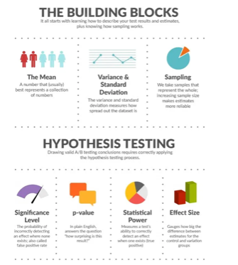
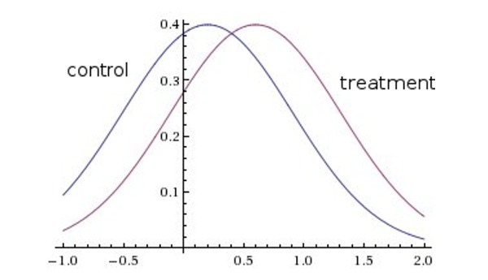
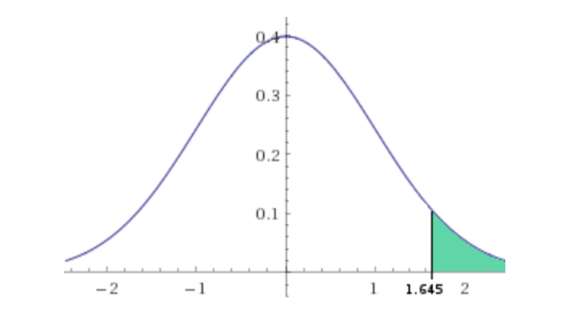

A/B testing takes two variations of a feature or promotion and distributes each version to unique groups, collecting measurements for each variation and providing measurable evidence that enables a developer to know which variation is more successful. The original state of a feature or promotion is known as the Control variation (commonly referred to as Variation A), and the new state is known as the Test variation (commonly referred to as Variation B).
A/B testing uses statistical methods to determine whether results from a Test variation and a Control variation are different. It does this by simultaneously measuring the effect of the Control and Test variations applied to a randomly selected subset of all app users that fall into unique groups (called the Control group and the Test group).

Case study: Landing Page Subscription Rate for my Blog
Let us focus on a simple and common A/B testing example. The scenario is, for all visitors visiting my blog, how many actually subscribe and sign-up for it. We want to test different layouts or designs in order to maximize the percentage of readers who sign up on it. This percentage is known in the online marketing world as the conversion rate, the rate at which you convert users from visitors to subscribers.
Let's suppose we (randomly or with some kind of criteria) split our users who come by our website into four groups. For the purpose of this experiment let's just call them control group, A, B and C.
Data collected
So let's say my blog starts attracting visitors continuously. I've analyzed my blog designs and have realized that the most important thing we need to improve right now is the conversion rate (subscriptions) at the landing page. Now, let us work together on this and solve this!
To do this, we will put ourselves a threshold regarding the minimum acceptable conversion rate. Let's suppose we want a conversion rate equal or higher than 20% (1 in 5 visitors should subscribe) — this way we'll only have to focus on those groups who have a value greater or equal than this one.
We can create an A/B test with the four groups: control, A, B, and C. Let's suppose we have some data like the following:
| Group | Visitors | Registers | Conversion rate |
|---|---|---|---|
| Control | 360 | 70 | 19.6% |
| Treatment A | 355 | 85 | 23.9% |
| Treatment B | 370 | 50 | 13.5% |
| Treatment C | 365 | 95 | 26.1% |
From the above data, we see that both groups A and C show conversion (or subscription, in our example) rates higher than 20%, which is our expectation threshold and was our initial goal. As Group C has the highest CVR of all the different groups, we can think that this group is good enough, choose it as the main design for my blog and finalize it.
BUTTTTTTT — how likely are we to see a result in Treatment C that occurred by random chance or was caused by the natural variation in our data? Are we sure that each time, C would perform the best? What if instead of around 365 visitors, we only had 10 or 20 visitors treated? Would we still be so confident to decide which one is the best choice? This is where we can call upon our friend, Statistics, and perform some hypothesis testing.
The process of A/B testing is just a glorified hypothesis test. This test is a way for us to judge if our results are meaningful. We perform a hypothesis test to determine if we have sufficient evidence to say our Variation is probably better than the Control. We start the test with the assumption that the Control is better until we have enough evidence to suggest otherwise.
In the statistics world, it's impossible to say something with 100% confidence (in fact, if we wanted to, it would take us infinite time — more time than our lives or even more time than the Internet has been running). So when talking about confidence intervals, we'll be using a 95% confidence interval, which is usually good enough for our purposes. Hypothesis testing is always about validating our confidence, so let's get to it.
Statistics come to our help!
When we do hypothesis testing, we need to start with a null hypothesis we want to check out. In this case, the null hypothesis will be that the subscription rate of the control group is no less than the subscription rate of our experimental groups. Mathematically this is modelled by:
H0 : px − p ≤ 0
Where p is the subscription (or conversion) rate of our control group and px is the subscription rate of one of our experiments (where x takes the values A, B or C).
The alternative hypothesis is therefore that the experimental page has a higher subscription rate than the control group:
H1 : px − p > 0
This is what we want to see and quantify right now.
When working with this kind of experiment, the sampled subscription rates are all normally distributed random variables. It's just like the classic statistics example of coin flipping, except that instead of the events heads and tails as the possible results of the experiment, we have the events convert and doesn't convert. The main task now is to see if the experimental group deviates too far from the control treatment in order to get a valid result.
Here's an example representation of the distribution of the control conversion rate and the treatment conversion rate.

The maximum peak of each curve is the subscription rate we measure, and the width of the curve tells us how sparse the data is. What we're looking to do is measure the difference between both curves, in order to compare the difference between the two subscription rates and see if that difference is large enough. If we are sure about this fact, we'll be able to conclude that the treatment applied to our blog visitors really has affected (positively or negatively) our users' behavior.
In order to do this, let's define a new random variable and call it X:
X = px − p
For each x in our different treatments (aka A, B and C), the null hypothesis which we want to prove or discard becomes X ≤ 0. We can now use the same techniques from the classic coin-flip exercise, but using the random variable X to give some conclusions based on the data in our previous table. But since the events don't have 50/50 chances of happening like in the coin-flip experiment, we need to know the probability distribution of X.
There is a theorem that says that the sum (or difference) of two normally distributed random variables is itself normally distributed — you can find the proof of this classical theorem of mathematics on Wikipedia. So finally, this gives us a way to calculate a 95% confidence interval.
Z-scores and One-tailed Tests
We can mathematically define the z-score for X like:
z = (px − p) / √( px(1−px)/Nx + p(1−p)/N ) , x ∈ {A, B, C}
where N is the sample size of the control group and Nx is the sample size of each of the treatment groups. This is due to the fact that the mean of X (the top part of the ratio) is px − p, and the variance of the distribution (whose square root becomes the second part of the ratio) is the sum of the variances of p and px respectively.
We only have to reject the null hypothesis if the experimental subscription rate is significantly higher than the control subscription rate.

In other words, we can reject the null hypothesis with 95% confidence if the z-score is higher than 1.64. Here is the table with the z-scores calculated using the formula above, so we have a better idea of the performance of each one of the treatments:
| Group | Visitors | Registers | Conversion rate | Z-score |
|---|---|---|---|---|
| Control | 360 | 70 | 19.6% | — |
| Treatment A | 355 | 85 | 23.9% | 1.48 |
| Treatment B | 370 | 50 | 13.5% | −1.76 |
| Treatment C | 365 | 95 | 26.1% | 3.79 |
Conclusion
From the above table, we can finally draw some conclusions and see that:
Treatment C has outperformed our control treatment without any doubt, with the highest z-score of all — well above 1.64. Treatment A has little statistical significance, but it's irrelevant at this point because we see the performance of Treatment C; it also wouldn't be significant enough because its value is lower than 1.64. Treatment B even has a negative z-score, so we can discard it without much trouble.
Comments
Sign in with GitHub to join the discussion.